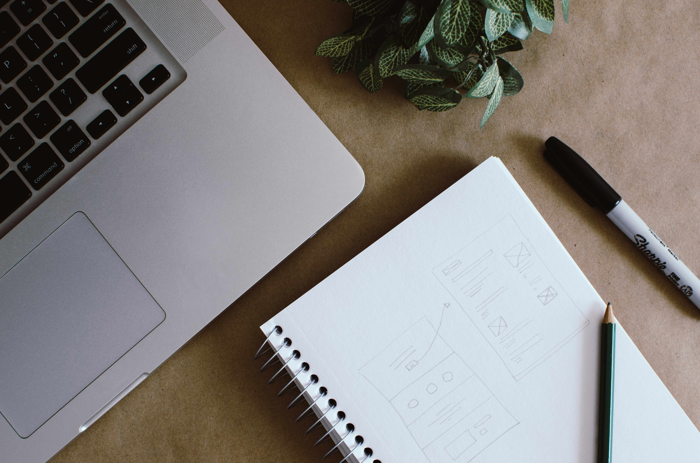

Content Creation
I love creating digital content because it lets me tell stories and share ideas in ways words alone can’t. It challenges me creatively and technically, and every project is a chance to connect with people and inspire them. For me, digital content isn’t just a hobby, it’s a way to communicate, inspire, and leave a mark in a medium that’s constantly evolving.
Next
Student Life
Being a student shapes my day-to-day perspective because it constantly challenges me to balance learning, creativity, and growth. Every class, assignment, and project pushes me to think critically, manage my time, and see problems from different angles. It’s not just about academics it’s about learning how to navigate life and opportunities with curiosity and purpose.

Next